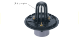

2023年
問題128 排水通気設備に関する次の記述のうち，最も不適当なものはどれか．
（1）排水管への掃除口の設置は，管径100mm以下の場合は，15m以内とする．
（2）排水トラップの断面積比(流出断面積/流入岬断面積)が大きくなると，封水強度は大きくなる．
（3）飲料用水槽において，管径75mmの間接排水管に設ける排水口空間は，最小150mmとする．
（4）ドーム状のルーフドレンのストレーナ部分の開口面積は，それに接続する排水管の管断面積の2倍程度が必要である．
（5）管径125mmの排水管の最小勾配は，1/200である．
2023年
問題128 正解（5） 頻出度AAA
管径125mmの排水横管の最小勾配は1/150である（2023-128-1表参照）．
2023-128-1表 排水横管の最小勾配
| 管径［mm］ | 最小勾配 |
| 65以下 | 1/50 |
| 75，100 | 1/100 |
| 125 | 1/150 |
| 150，200，250，300 | 1/200 |
自然流下式の排水横引き管の勾配は，流速が最小0.6～最大1.5m/sとなるように設ける．
勾配が緩いと流速が遅くなり，洗浄力が弱くなって固形物等が付着しやすくなる．逆に勾配をきつくし過ぎると，流速が速くなって流水深が浅くなり，固形物に対する搬送能力が弱まる．
-(1) 排水管の掃除口については，本年度問題130解説参照．
-(2) 排水管内に正圧又は負圧が生じたときの封水保持能力を，トラップの封水強度という．脚断面積比（流出脚断面積/流入脚断面積）の大きいトラップは，満管になりにくく流速も遅くなるので，サイホン現象が起きにくく破封しにくい（封水強度が大きい）．2023-128-1図参照．
2023-128-1図 トラップ

-(3) 排水口空間を設けて排水の逆流を防止することを間接排水という（2023-128-2図参照）．
2023-128-2図 間接排水の例

間接排水としなければならない器具，水受け容器は，2023-128-2表参照．
2023-128-2表 間接排水とする器具等
| 区分 | 機器名称 | |
| サービス用機器 | 飲料用 | 水飲み器，飲料用冷水器，給茶器，浄水器 |
| 冷蔵用 | 冷蔵庫，冷凍庫 ，その食品冷蔵・冷凍機器 | |
| 厨房用 | 皮むき機，洗米機，製氷器，食器洗浄機，消毒器，調理用，流し（食材を溜め洗いするシンク等） | |
| 洗濯用 | 洗濯機◎，脱水機◎，洗濯機パン◎ | |
| 医療･研究用機器 | 蒸留水装置，滅菌水装置，滅菌器，滅菌装置，消毒器，洗浄機等 | |
| 水泳プール | プール自体の排水，オーバフロー排水，ろ過装置逆洗水，周辺歩道の床排水◎ | |
| 噴水 | 噴水自体の排水◎，オーバフロー排水◎，ろ過装置逆洗水◎ | |
| 配管・装置の排水 | 貯水槽・膨張水槽のオーバフロー及び排水 上水・給湯・飲料用冷水ポンプ及び露受け皿の排水◎ 上水・給湯・飲料用冷却水系統の水抜き 圧力水槽用逃がし弁及び貯湯槽からの排水 消火栓系統及びスプリンクラー系統の水抜き◎ 冷凍機◎，冷却塔◎，熱媒として水を使用する装置及び空気調和機器の排水◎ 上水用水処理装置の排水 | |
| 温水系統等の排水 | 貯湯槽・電気温水器からの排水 ボイラ◎，熱交換器◎及び蒸気管のドリップ等の排水◎ |
|
※ ◎印は，「排水口開放」でも良い機器．
「排水口開放」とは，排水が飛び散るのを嫌ったり，スペース的に困難な場合に，規定の排水口空間を取らない，簡易間接排水方法のことである．飲食関係や人が直接触れる水受け容器の間接排水としては認められていない（2023-128-3図参照）．
2023-128-3図 間接排水と排水口開放

-(5) ルーフドレンは屋外にあるため木の葉や土砂で詰まりやすいので，ストレーナ部分の開口面積は，それに接続する排水管の管断面積の2倍程度とし，できるだけ屋根面から突き出たドーム型が好ましい2023-128-4図参照．
2023-128-4図 ドーム状のルーフドレン

出典 株式会社中部コーポレーション
https://www.chubu-net.co.jp/kenzai/Product/category/1/